源码拆解 · MASTEROFVFX2070 / XRAY-MIRROR · 2026-11-11
X 射线镜子拆解
这个网页并不透视任何东西。画面里的头骨、大脑和肌肉来自一套公开的通用解剖模型，网页做的事情是用普通摄像头把这套模型准确地贴到你的头和手上，再画成 X 光片的样子。整件作品是一个 2.76 MB 的 HTML 文件，逻辑代码 618 行。
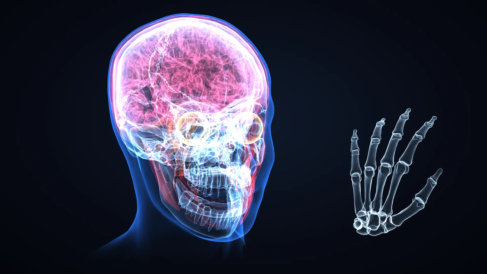
斜位 OBL · 全部图层 · jawOpen 0.42
图 1 页面内嵌的全部解剖网格叠在一起：皮肤轮廓、头骨（下颌张开 42%）、大脑、肌肉、眼球，右侧是按 21 个手部关节点摆出来的手骨。除图 8 外，本页配图都由我按原作的配色和着色参数重绘内嵌数据得到，不是原页面的运行截图。
- 文件
- 1 个 HTML，2,762,056 字节
- 代码
- 618 行 JavaScript（含着色器），54 行 CSS
- 解剖数据
- 23 个网格，225,499 个三角形
- 追踪
- MediaPipe：脸 478 点，手 21 点 × 2
- 渲染
- three.js 0.160，每帧最多 254,498 个三角形
- 上传
- 0 处上传（读码并实际运行核对）
结论
- 核心是坐标系对齐。作者把解剖模型预先缩放、对齐到 MediaPipe 的“标准脸”坐标系。MediaPipe 每帧输出的 4×4 姿态矩阵于是可以原样当作头骨的模型矩阵。我测了对齐质量：标准脸的 468 个顶点到内嵌皮肤网格表面的距离，中位数 1.45 mm，约 95% 在 5 mm 以内。
- 稳定感来自一步二维修正。每帧取 13 个脸部点，比较“模型投影出来的位置”和“追踪器实际看到的位置”，解出一个缩放和一个平移，乘进投影矩阵。头骨因此始终压在脸上，不随镜头视场角或脸型差异漂移。
- X 光质感只用了十几行着色器。表面越侧对视线越亮，颜色相加混合，不做深度测试。另有一层近黑色的“面纱”先把真实的脸压暗，发光的线条才读得出来。
- 会动的只有两处。下颌按 MediaPipe 的
jawOpen 系数绕铰点转 0 到 20.6°。手骨是 15 节单位长度的指骨网格，被拉伸到相邻两个关节点之间，手掌是一整块仿射变形的骨块。
- 帖子的说法基本属实，两处要加前提。首次启动要联网下载约 22.6 MB 的库和模型。“视频不离开电脑”在代码里成立，但第三方脚本是运行时从 CDN 取的，没有完整性校验。
- 实际运行与读码一致。我把文件跑了起来，用样例照片代替摄像头。流程、网络请求和二维修正的作用都和上面的描述吻合。另外发现一个小问题：左右手标签判反了，对画面影响很小。
- 慢机器上卡，主因是手部追踪。它每一帧都跑，画面里没有手时也在找手，单次开销是脸部追踪的 3 到 4 倍。我按剖析结果做了一个优化版，见“为什么卡”一节。
把解剖模型叠到镜像画面上这个点子不新，2014 年巴黎就有用 Kinect 深度相机做的互动装置，约翰·霍普金斯大学 2017 年有教学用的 magic mirror。这一版的不同在于只用普通摄像头、只有一个 HTML 文件，而且范围选得很克制：只做头和手，只让下颌动，其余全靠对齐精度和画面质感。
一帧画面是怎么来的
页面每拿到一个新的视频帧就走一遍下面的流程。脸和手是两条独立的线，最后画进同一块 WebGL 画布。
图 2 每帧的数据流。蓝框是让头骨“钉住”的那一步，下一节单独讲。
- 取帧。
<video> 播放前置摄像头的流。只有 currentTime 变了才处理，所以节奏跟着摄像头帧率走，不跟显示器刷新率走。
- 追踪脸。FaceLandmarker 返回 478 个脸部点、一个 4×4 变换矩阵和 52 个表情系数。页面只用了其中一个系数
jawOpen。GPU 初始化失败会自动改用 CPU。
- 追踪手。只有“手骨”图层、镜片模式或调试面板打开时才运行，省掉一次不必要的推理。手部追踪加载失败时头部功能照常可用。
- 平滑。位置、旋转、缩放分别按 0.6、0.55、0.5 的比例向新值靠拢。按 30 帧每秒算，位置约 110 ms 走完 95%，够稳也不拖。
- 二维贴合。用 13 个脸部点解一个缩放和平移，修正投影矩阵。
- 手动微调。7 个滑杆：整体大小、宽、高、深、左右、上下、前后。设置存在浏览器的
localStorage 里。
- 画头。顺序是面纱、轮廓、肌肉、头骨、眼球、大脑。
- 画手。清掉深度缓冲，换正交相机，在像素坐标里画手骨。
- 画标注。最上层的二维画布画镜片圆圈、解剖名称和调试点。脸丢失超过 250 ms，头部模型隐藏。
头骨是怎么钉在脸上的
MediaPipe 的 face geometry 模块内置一张“标准脸”（canonical face model）：468 个顶点，单位是厘米。它每帧用加权 Procrustes 把这张标准脸拟合到检测出的点上，输出“标准脸坐标到相机空间”的矩阵。这个矩阵是按一台虚拟相机算的：垂直视场角 63°，近平面 1 cm，远平面 100 m。
作者做了两件对应的事。第一，把 BodyParts3D 的头整体对齐到这张标准脸上，于是矩阵可以直接用。第二，three.js 的相机参数照抄那台虚拟相机：PerspectiveCamera(63, W / H, 1, 10000)。
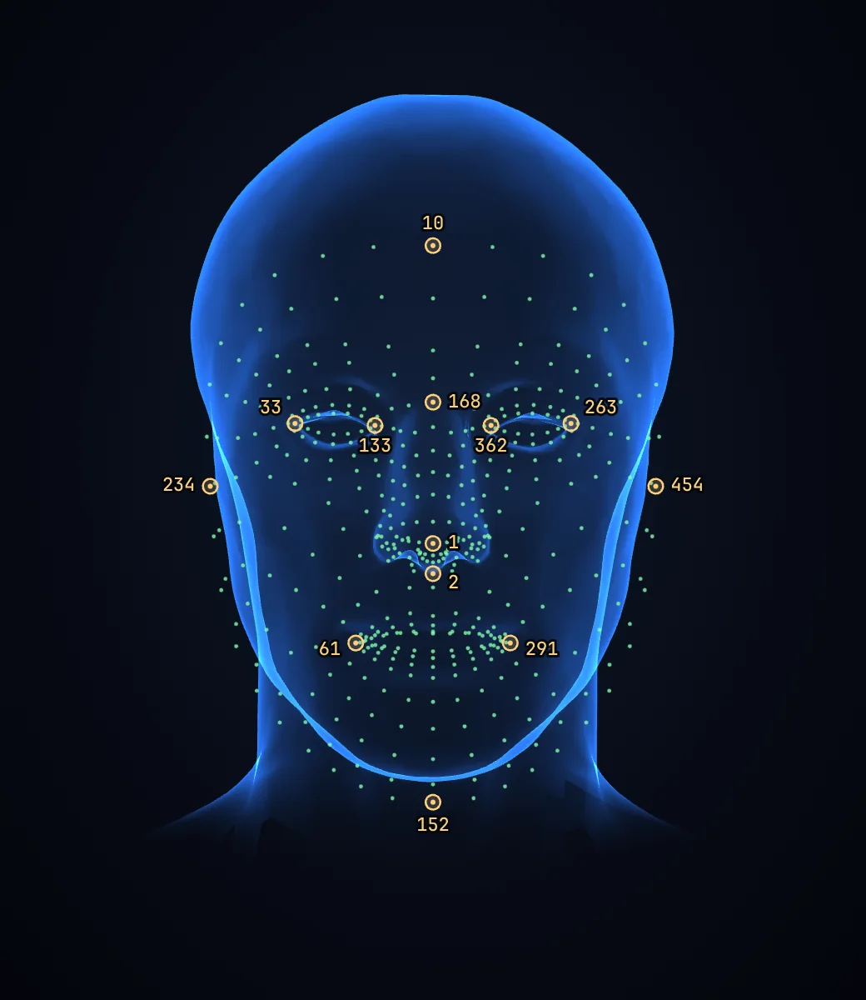
正位 AP · 468 个标准点 + 13 个贴合点L
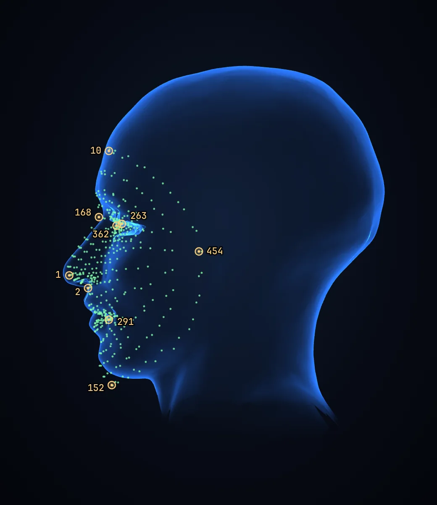
侧位 LAT · 标准点贴在皮肤面上
图 3 绿点是 MediaPipe 标准脸的 468 个顶点，蓝色是页面内嵌的皮肤网格，两者在脸部重合。琥珀色圆圈是用于二维贴合的 13 个点，数字是 MediaPipe 的点位编号：眼角 33、133、362、263，鼻尖 1，鼻下 2，眉心 168，额顶 10，下巴 152，脸侧 234、454，嘴角 61、291。正位图右上角的 L 表示本人的左侧在画面右边，这是模型的 +x 方向。
证据有两条。页面元数据里存的 13 个贴合点坐标，和 MediaPipe 仓库里 canonical_face_model.obj 的对应顶点逐一相同（保留三位小数）。我又把全部 468 个标准顶点和内嵌皮肤网格做了点到三角面的最近距离测量：中位数 1.45 mm，90% 分位 4.2 mm，最大 8.6 mm。偏差最大的是下颌缘和下巴，标准脸在那一带比模型的皮肤面更靠外。
每帧的二维修正
只靠姿态矩阵还会有残差，原因是真实摄像头的视场角不一定是 63°，每个人的脸也不是标准脸。页面每帧多做一步最小二乘：
p = 13 个标准点经姿态矩阵和 63° 投影后的屏幕位置
q = 追踪器在这一帧给出的同编号点
s = Σ (pᵢ − p̄)·(qᵢ − q̄) / Σ |pᵢ − p̄|² 限制在 0.6 到 1.6
t = q̄ − s·p̄
投影矩阵 ← [ s 0 0 tₓ ; 0 s 0 t_y ; 0 0 1 0 ; 0 0 0 1 ] × 投影矩阵
它只解缩放和平移，不解旋转，旋转完全信任 MediaPipe。修正量本身也做了平滑。这一步很便宜，效果是模型在屏幕上的位置被直接约束到检测结果上，三维估计里的系统误差不会表现为画面上的错位。调试面板里显示的“distance … cm (estimate)”就是姿态矩阵的 −z，它假设你的脸和标准脸一样大。
X 光质感
片元着色器的 X 光分支只有一个公式，三个渲染状态：
透明度 = (0.035 + 0.95 × (1 − |n·v|)^2.1) × 增益
混合 = 相加 深度测试 = 关 双面绘制 = 开
n·v 是表面法线和视线的夹角余弦。正对视线的面几乎透明，转到侧面的面变亮，这和真实 X 光片里“射线切过骨皮质的地方最白”的观感一致。因为颜色相加又不做深度测试，前后所有表面的边缘都会透出来，层层叠叠就有了透视片的感觉。
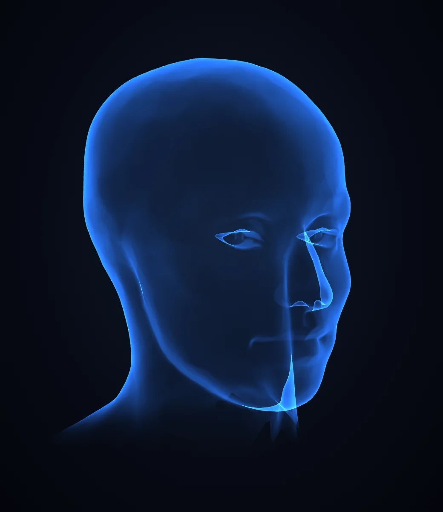
皮肤轮廓 · 13,999 △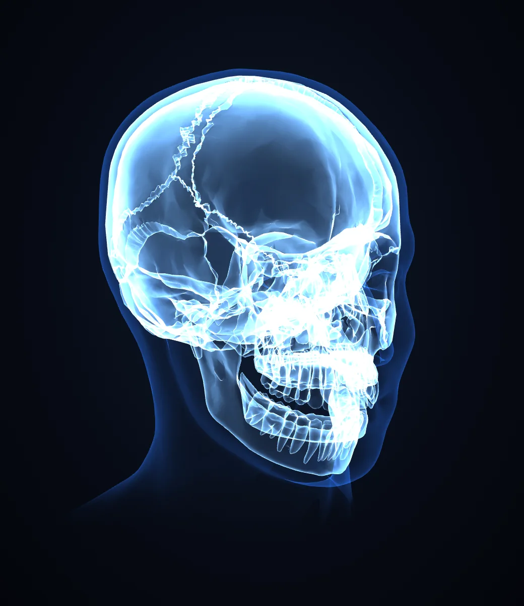
头骨 · 72,000 △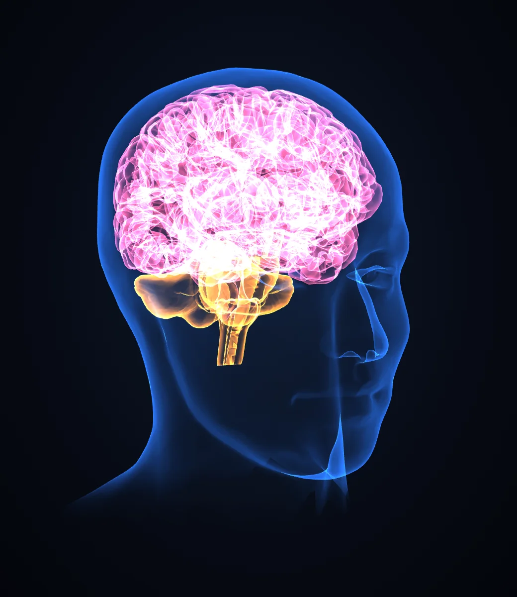
大脑 · 86,000 △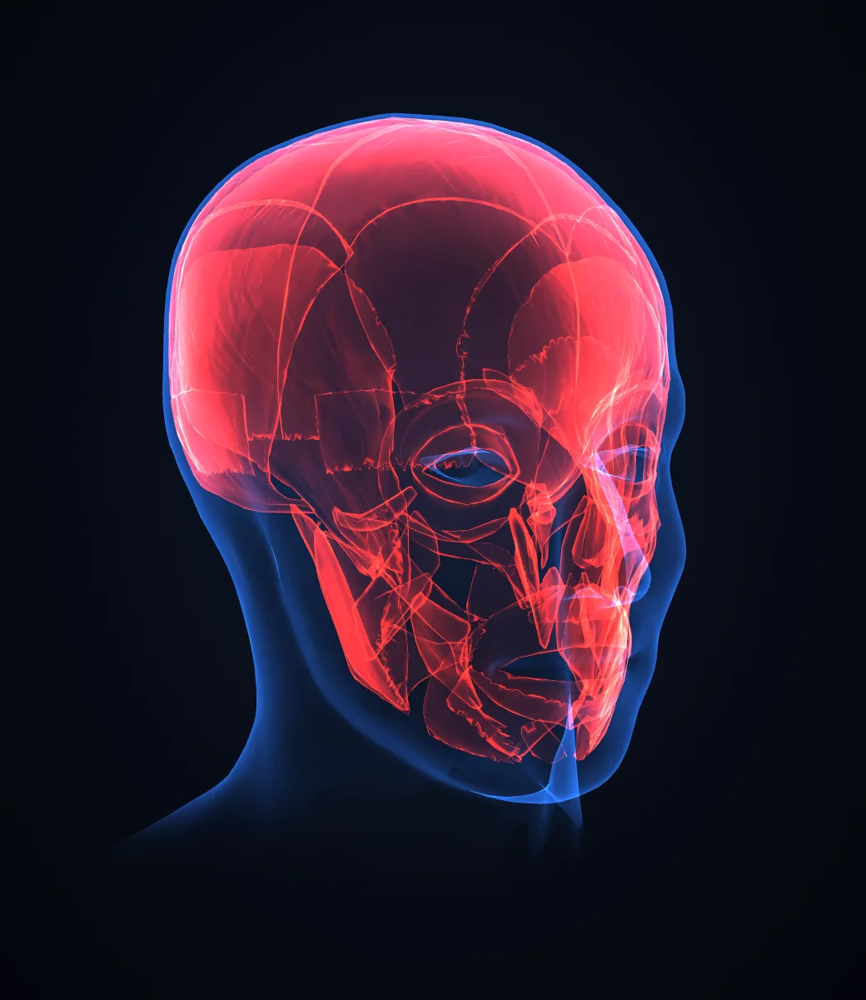
肌肉 · 36,000 △
图 4 五个图层和叠加结果，△ 后面是三角形数。同一张皮肤网格在页面里画两次，一次做面纱，一次做蓝色轮廓。
- 面纱。皮肤网格先用近黑色
#04070d 画一遍，不透明度是 1 减去“Real me showing through”滑杆的值，默认 0.88。真实的脸被压暗，发光线条才有底色可依。脖子在下巴以下约 3 cm 的范围内渐隐，不留硬边。
- 亮度平摊。相加混合的问题是图层一多就一片白。页面按同时打开的重图层数分配增益：1 层 1.00，2 层 0.63，3 层 0.45。各层还有固定系数，大脑 0.36，肌肉 0.5，轮廓 0.55，小脑和脑干 0.6，眼球 0.9。
- 边缘羽化。轮廓最外沿再淡出一点，避免模型边缘在真实画面上显得太硬。
- 实体模式。另一种外观是普通的漫反射加一点轮廓光，打开深度测试，用于对齐时看清楚头骨和脸的相对位置。
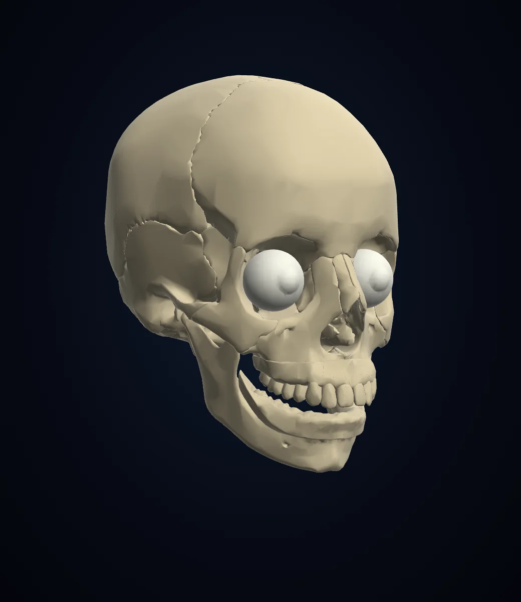
实体模式 · 头骨 + 眼球
图 5 实体模式，以及“只显示左半边”的切面。切面是着色器里一个定义在头部坐标系里的裁剪平面，跟着头一起转。
张嘴
MediaPipe 的表情系数里有一项 jawOpen，范围 0 到 1。页面把它平滑后乘以 0.36 弧度，作为下颌绕 x 轴的转角。下颌骨网格挂在一个枢轴上，枢轴坐标 (0, 0.84, −3.80) cm。我量了下颌网格顶部 6 mm 的区域，也就是两侧髁突，平均高度 0.61 cm，前后位置 −3.74 cm，枢轴正落在两侧颞下颌关节的连线上。
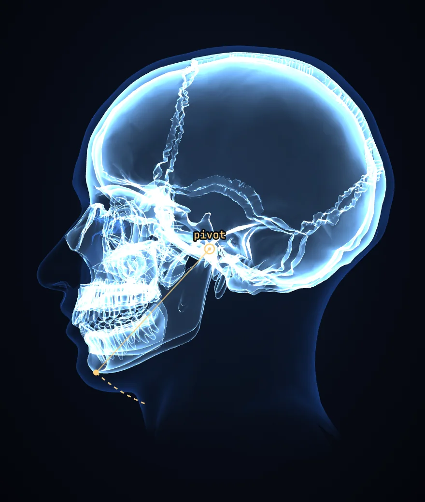
侧位 LAT · jawOpen 0 · 0°jawOpen 0.5 · 10.3°
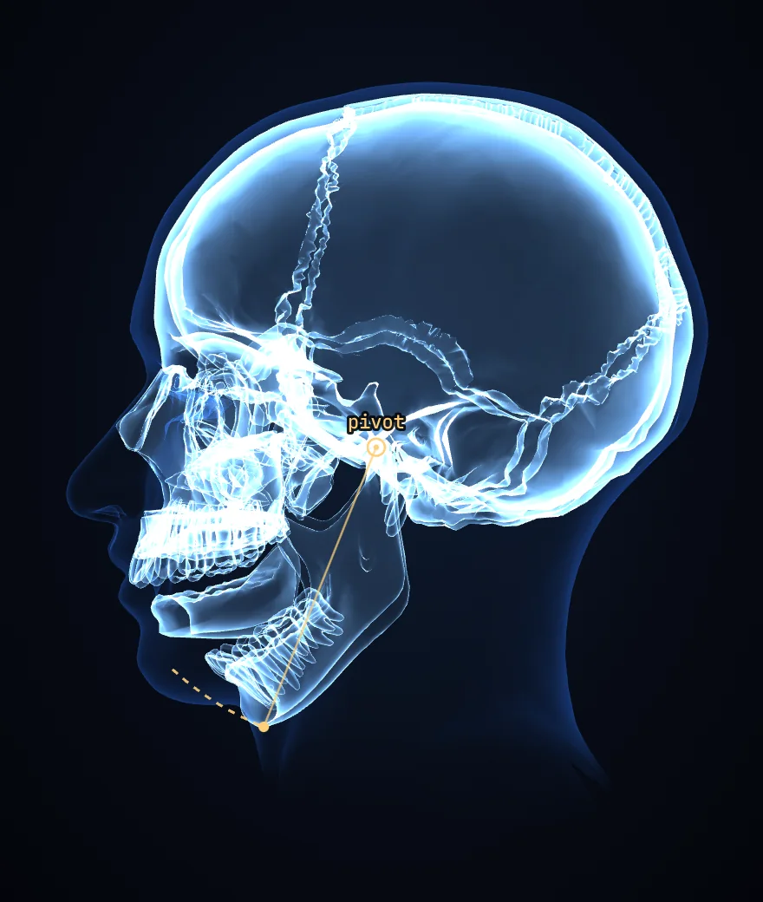
jawOpen 1.0 · 20.6°
图 6 下颌是一个纯铰链。琥珀色圆圈是枢轴，虚线是颏部最低点的运动轨迹。张到最大时颏部走 4.1 cm，下门齿位置移动 3.7 cm，其中向下 2.8 cm。真实的下颌在张大时髁突还会向前滑动，这里没有模拟。
手骨
手的做法和头不同。头有一个完整的三维姿态，手只有 21 个关节点，页面直接在像素坐标里用这些点摆骨头。
指骨。15 节指骨各是一个独立网格，预先归一化成沿 x 轴 1 个单位长。运行时，方向取两个关节点的连线，长度取两点距离，绕自身轴的滚转由食指根到小指根的连线决定。指尖那一节的长度乘 0.8，因为追踪点落在指尖皮肤上，比骨头末端更远。
掌块。腕骨和四根掌骨合成一块，存成一种斜坐标：手腕是原点，食指根是 (1, 0, 0)，小指根是 (0, 1, 0)。运行时用图里的 e1、e2 和它们的法向组成基矩阵，一次仿射变换就把整块手掌骨摆好并撑到合适的大小。
遮住真手。WebGL 画布下面还有一层二维画布，用粗圆头线条沿关节点画出手的暗色剪影，线宽约为指根跨度的三分之一。
左右手。左右手标签只决定骨块沿厚度方向是否镜像，也就是手心面和手背面哪个朝外。代码在这里把追踪器给的标签反过来用，实测这一步是错的，见下文。
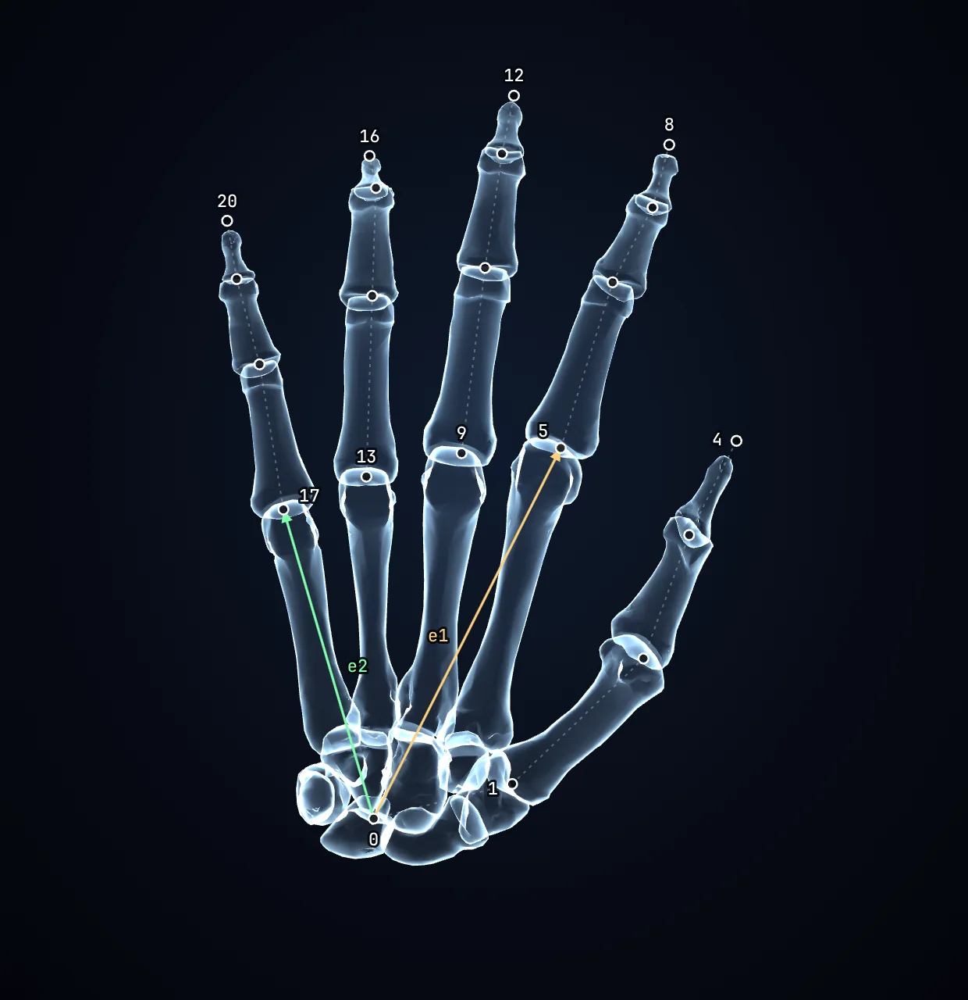
数据集自带的手 · 21 个关节点
图 7 白点是 21 个关节点，数字是 MediaPipe 的编号。e1 从手腕 0 指向食指根 5，e2 指向小指根 17，两者决定掌块的位置、朝向和大小。
代价是手骨只有二维半的精度。深度用的是 MediaPipe 给的相对值，相机是正交的，手和头之间也没有遮挡关系：手举到脸前时，头骨照样画在最上面。
左右手判反了。代码注释认为追踪器的左右手标签是按镜像画面命名的，于是取了反。我用同一版本的 MediaPipe 单独测了 5 张未镜像的样例照片：6 只手的标签都和真实的左右手一致，把照片水平翻转后标签全部互换。所以取反是多余的，实测中举起的左手在调试面板里显示为 right。后果比听起来小。骨块的位置和朝向只由关节点决定，标签只影响手心面和手背面哪个朝外，在 X 光模式下几乎看不出来。
四层画布、镜像和镜片
| 从前到后 | 画什么 | 镜像 | 受镜片遮罩 |
|---|
#hud 二维画布 | 解剖名称和引线、镜片圆圈、调试点 | 否，坐标手动翻转 | 否 |
|---|
#gl WebGL 画布 | 头部各图层，然后是手骨 | CSS scaleX(-1) | 是 |
|---|
#shade 二维画布 | 手的暗色剪影 | CSS scaleX(-1) | 是 |
|---|
<video> | 摄像头原画面 | CSS scaleX(-1) | 否 |
|---|
镜像全部交给 CSS，推理和三维计算都在未镜像的坐标里做。文字层不能镜像，所以标签的横坐标用画布宽度减一下。
“混合现实”面板里的显示范围有两种实现。半边、上半、下半是着色器里的裁剪平面，带最多 5 cm 的软边。“X 光镜片”则完全不碰三维：页面给两块画布加一个 CSS mask-image 径向渐变，圆心跟着食指尖走，没有手就跟鼠标，再没有就跟鼻尖。圆外看到的是普通的摄像头画面。
解剖标签是 26 条头部名称加 5 条手部名称，每条带一两个头部坐标系里的锚点。标签排在头的左右两列，纵向位置做了平滑，排序带滞回，转头时不会来回跳。
解剖数据
| 网格 | 图层 | 顶点 | 三角形 | | 字节 |
|---|
cerebrum | 大脑 | 35,147 | 70,000 | | 630,882 |
|---|
cranium | 头骨 | 29,041 | 58,000 | | 522,246 |
|---|
muscles | 肌肉 | 18,249 | 36,000 | | 325,494 |
|---|
hindbrain | 小脑、脑干 | 7,935 | 16,000 | | 143,610 |
|---|
jaw | 下颌 | 7,030 | 14,000 | | 126,180 |
|---|
skin | 面纱、轮廓 | 7,039 | 13,999 | | 126,228 |
|---|
hand_b_* × 15 | 指骨 | 4,031 | 8,000 | | 72,186 |
|---|
hand_palm | 掌块 | 3,522 | 7,000 | | 63,132 |
|---|
eyes | 眼球 | 1,254 | 2,500 | | 22,524 |
|---|
| 合计 23 个网格 | | 113,248 | 225,499 | | 2,032,482 |
|---|
条形长度按三角形数画，最长一条是 70,000。色点是该图层在 X 光模式下的颜色。
- 简化。三角形数都是整数目标：70,000、58,000、36,000、16,000、14,000、7,000、2,500，指骨每节 450 到 700。这是按目标面数做网格简化的结果。页面的署名里也写明模型“经过简化和重新对齐”。
- 压缩。每个顶点是 3 个 16 位整数，按各网格自己的包围盒量化，最粗的步长是 4.1 微米。索引也是 16 位。法线不存，加载时现算。
- 嵌入。2,032,482 字节的二进制转成 base64 后是 2,709,976 个字符，放在一个
<script type="application/octet-stream"> 标签里。整份 HTML 除了这一行和一行 6 KB 的元数据，只有 45.6 KB。
- 坐标。单位是厘米。+y 向上，+z 朝脸的前方，+x 是本人的左侧，原点和朝向都与 MediaPipe 标准脸一致。
体积与加载
“一个网页”指的是你下载的那个文件。点下 Start camera 之后，页面才去两个 CDN 取运行库和追踪模型。
| 资源 | 来源 | | 未压缩 | gzip 估算 |
|---|
| MediaPipe 运行时vision_wasm_internal.wasm | jsDelivr | | 9.42 MB | 2.87 MB |
|---|
| 手部模型hand_landmarker.task | Google 存储 | | 7.82 MB | 5.85 MB |
|---|
| 脸部模型face_landmarker.task | Google 存储 | | 3.76 MB | 3.33 MB |
|---|
| 页面本身，含全部网格index.html | 你下载的文件 | | 2.76 MB | 1.75 MB |
|---|
| three.js 0.160.0three.module.js | jsDelivr | | 1.27 MB | 0.26 MB |
|---|
| MediaPipe 的 JS 胶水代码vision_bundle.mjs 等 2 个文件 | jsDelivr | | 0.35 MB | 0.09 MB |
|---|
| 首次启动合计 | | | 25.38 MB | 14.15 MB |
|---|
蓝色是页面文件本身，灰色是启动时另外下载的 22.6 MB。大小取自 npm 上同版本的包和 Google 存储上的模型文件。gzip 一列是我本地压缩的估算，实际传输量取决于 CDN 用哪种压缩。
所以它不需要安装，但需要联网，离线打不开。第二次打开时这些文件通常来自浏览器缓存。
实际运行
我把委托附带的文件原样加载进无头浏览器。它要下载的运行库和模型换成本地的同版本文件，其余网络请求一律拦截并记录。摄像头用浏览器的假摄像头功能代替，画面是 MediaPipe 文档里的几张公开样例照片。
图 8 原页面在内置演示场景下的真实界面，打开了解剖标签。右侧依次是图层、外观、混合现实、调试数据和贴合微调。手部的标签在舞台右缘被裁掉了一截。
| 样例照片 | 脸 | 转头 / 点头 / 歪头 | jawOpen | 修正缩放 | 纵向平移 | 手 |
|---|
| 举起食指 | 478 点 | −6° / 16° / −12° | 0.13 | 0.948 | 0.029 | 1 |
|---|
| 竖起拇指 | 478 点 | 28° / 14° / −11° | 0.04 | 0.955 | 0.022 | 1 |
|---|
| 手持眼镜 | 478 点 | 7° / 17° / 5° | 0.00 | 0.928 | 0.042 | 2 |
|---|
| 手臂遮住半张脸 | 未检出 | 无 | 无 | 无 | 无 | 2 |
|---|
数值读自页面自己的调试面板。平移的单位是归一化设备坐标，整幅画面高为 2，所以 0.029 约等于画面高度的 1.5%。
- 流程与读码一致。依赖都在本地时，点下 Start camera 后约 8 秒开始追踪。脸和手分别被识别，头骨、轮廓和手骨叠在正确的位置。脸被手臂遮住时，状态栏提示先把脸对准镜头，手骨照常显示。
- 二维修正确实在起作用。三张照片上它都把投影缩小了 4.5% 到 7%，并向上平移画面高度的 1% 到 2%。没有这一步，头骨会比脸大一圈。
- 没有上传。每次运行页面发出 8 个请求，全部是下载，没有请求体：three.js 1 个，MediaPipe 的脚本和 WASM 5 个，模型 2 个。此外没有出现任何请求。
- 离不开 GPU。这个沙箱没有显卡，WebGL 由软件渲染，追踪器的 GPU 版也由软件模拟，页面自报每秒 1 帧。这个数字只是下限，不代表普通电脑上的表现。
为什么卡，以及优化版
原页面在慢机器上明显卡顿。我在没有显卡的沙箱里做了剖析，找到三个具体原因。
- 手部追踪器每一帧都在跑。画面里没有手时，它每帧都在整幅画面里找手，这是全流程里最贵的一步：在 CPU 上找一次手要 60 到 86 ms，脸部追踪一次只要 21 ms。没举手的大部分时间里，页面把大半算力花在找一只不存在的手上。这一条对所有机器都成立。
- 没有显卡时，追踪器的“GPU 版”是软件模拟出来的。原页面 97% 的主线程时间在等它出结果，每帧约 0.8 秒。同一台机器上改用 CPU 版，脸部追踪一次 21 ms。
- 手部暗影的画布模糊。每只手每帧做一次高斯模糊，没有显卡时每帧约 80 ms。
我按这三条做了一个优化版，另外加了自动画质：按实际帧率调节 3D 图层的清晰度和手部追踪的频率，跟不上时自动降，有余量时再升回来。
| 场景 | 原版 | 优化版，自动 | 优化版，最佳画质 |
|---|
| 实时，没举手 | 1.2 帧/秒 | 10.1 帧/秒 | 5.0 帧/秒 |
|---|
| 实时，举着一只手 | 1.1 帧/秒 | 7.9 帧/秒 | 3.3 帧/秒 |
|---|
| 只画 3D 图层，默认图层 | 6.1 帧/秒 | 20.7 帧/秒 | 同原版 |
|---|
同一沙箱：无显卡，4 核，软件渲染，摄像头用一张静止的样例照片代替。“最佳画质”档渲染出来的画面与原版逐像素相同。
这些数字是最差环境下的提升。有显卡的机器上能快多少取决于机器，我没有数据。优化版是在原文件上打补丁生成的。原作没有许可证，所以公开仓库里只放了补丁脚本 fast/patch.py，生成的文件请仅自用。
帖子的说法逐条核对
| 帖子的说法 | 代码里的事实 | 判断 |
|---|
| 一个网页，无需安装 | 仓库里只有一个 HTML（另一个文件名不同、内容逐字节相同）。运行库和模型在启动时从 jsDelivr 和 Google 存储下载。 | ◐ 属实，需联网 |
| 视频永远不会离开电脑 | 脚本里没有 fetch、XHR、WebSocket、WebRTC 或录制接口。对外只有取库、取 WASM、取模型三类下载。设置存在 localStorage。实际运行时页面只发出 8 个下载请求，没有带数据的请求。第三方脚本在运行时加载，没有 SRI 校验和 CSP 限制，这条保证依赖两个 CDN 上的文件不被改动。 | ◐ 属实，有前提 |
| 看到你头部内部的头骨、大脑和肌肉，实时跟踪 | 每个视频帧更新一次姿态。显示的是同一套通用模型，按你的脸缩放和摆放。页面自己写了“不是你的扫描，不是医疗工具”。 | ✓ 属实 |
| 张开嘴，下巴就会张开 | jawOpen 系数驱动下颌铰链，0 到 20.6°。 | ✓ 属实 |
| 举起一只手，就能看到它的骨头 | 最多两只手，每只 1 个掌块加 15 节指骨，按 21 个关节点摆放。 | ✓ 属实 |
| 解剖模型来自 BodyParts3D，CC BY-SA 2.1 Japan | 页面底部有同样的署名，并注明模型经过简化和重新对齐。 | ✓ 属实 |
| 可以免费下载并试用 | GitHub 仓库公开，可下载。仓库没有 LICENSE 文件，代码并未授权他人改用或再分发。 | ◐ 可试用，未开源 |
| 通过描述需求，用 Claude Fable 5.2 构建 | 代码无法证明是谁写的。有几处与这种做法相符的痕迹，见下一节。 | ? 无法核实 |
代码里留下的开发痕迹
页面里有几个对最终用户没有用处的入口：
#demo：不需要摄像头的内置测试场景。一个按正弦左右摆动的假头放在镜头前 46 cm，下颌自动开合，旁边是数据集自带的那只手。?still：只渲染固定时刻的一帧，方便截图比对。?dump：把三层画布拍平成一张 PNG 贴在页面上，并在控制台打印二维贴合的缩放和平移。?three=：演示模式下可以换一个 three.js 的地址。
还有两处防御式写法。姿态矩阵的解析同时接受行主序和列主序两种内存布局。手的左右手字段同时读 handedness 和 handednesses 两个名字。
这些都指向同一种工作条件：写代码的一方看不到真实的摄像头画面，访问不了公共 CDN，只能靠截图和打印出来的数字确认结果，并且对追踪库的实际返回格式没有把握。这和“向模型描述需求，由模型在沙箱里编写并自测”的说法相符。它不能证明帖子的说法，一位谨慎的人类开发者也可能这样写。我做这次分析的沙箱同样访问不了 jsDelivr。
界面文案也有特点。控件名是日常说法，例如“Real me showing through”“Fit to my head”，状态栏用整句话告诉你下一步做什么。注释解释的多是这样做的原因。
局限
- 解剖是通用的。模型刚性摆放，只有整体缩放和 7 个手动滑杆。它显示结构通常在哪里，不反映你本人的骨骼。
- 只有下颌会动。肌肉不随表情变形。眼球不跟视线转，尽管 MediaPipe 已经给出了视线方向的系数和虹膜点。
- 手是二维半的叠加。手和头之间没有遮挡关系。
- 只跟一张脸。多人同时入镜时只有一个人有效果。
- 依赖在线 CDN。没有离线包，没有完整性校验。
- 授权。代码没有许可证。模型是 CC BY-SA 2.1 Japan，改过的模型再分发时要署名并沿用同一许可。
- 左右手标签判反。调试面板里的左右手是反的，骨块的手心面和手背面互换。见手骨一节。
- 标签会被画面边缘裁掉。手靠近画面边缘时，手部的解剖名称有一部分落在舞台之外。
- 慢机器上会卡。每帧两次神经网络推理，外加最多约 25 万个双面、相加混合的三角形。原因和对策见“为什么卡”一节。有显卡的电脑和手机上的实际帧率我没有数据。
如果要做自己的版本
这是我的建议，不是原作的内容。
- 可以直接借用的是做法。对齐到标准脸坐标系、每帧二维贴合、面纱、边缘发光加相加混合、单位长度骨骼，这五个做法都是通用技术，可以重新实现。原仓库的代码没有授权，不能照搬。
- 主要工作量在离线数据处理。从 DBCLS 的归档站取 BodyParts3D 原始部件，按图层挑选合并，简化到目标面数，对齐到标准脸，量化打包。这部分决定最后的贴合精度。
- 值得补的五处。把运行库和模型放到本地并加完整性校验，做成真正离线可用；用视线和眨眼系数驱动眼球；用姿态模型把范围扩到躯干骨架；竖屏和手机的布局与性能档位；用手部分割解决手挡脸时的遮挡。
- 放到线下屏幕上。需要先确认设备有前置摄像头和可用的 GPU，再处理竖屏构图、离线依赖和无人值守时的自动开始与重置。
方法，以及还没验证的事
- 读了什么。委托附带的
X-Ray Mirror.html：2,762,056 字节，777 行，SHA-256 以 b5e12cd0755ac097 开头。它与 GitHub 仓库 MasterOfVFX2070/xray-mirror 提交 41e2413（2026-11-10）里的 index.html 逐字节相同。我读完了全部代码。
- 量了什么。用自己的脚本解出内嵌网格，统计顶点、三角形和字节；和 MediaPipe 仓库里的标准脸模型、face geometry 源码逐项对照；测量了对齐误差、下颌枢轴和手部骨骼的归一化方式。
- 跑了什么。原页面的演示场景；4 张样例照片经假摄像头送入的实时模式；另用自己的测试页单独核对了 MediaPipe 的左右手标签。运行库和模型都是原页面指定的版本：three.js 0.160.0，tasks-vision 0.10.14。
- 配图怎么来的。图 1 到图 7 出自我写的一个独立的 three.js 场景：把内嵌网格当数据读入，按原作的颜色和着色参数重绘。重绘时下颌和手骨都按上文描述的算法摆放，结果与原页面的实际渲染一致。图 8 是原页面的截图。
还没验证的事
真实摄像头下的动态表现。样例照片是静止的。转头和张嘴过程中的延迟、抖动，以及不同光线下的稳定性，我没有数据。
真实设备上的帧率。有显卡的电脑和手机上能跑到多少帧，要在实机上打开调试面板看 speed 一项。
来源